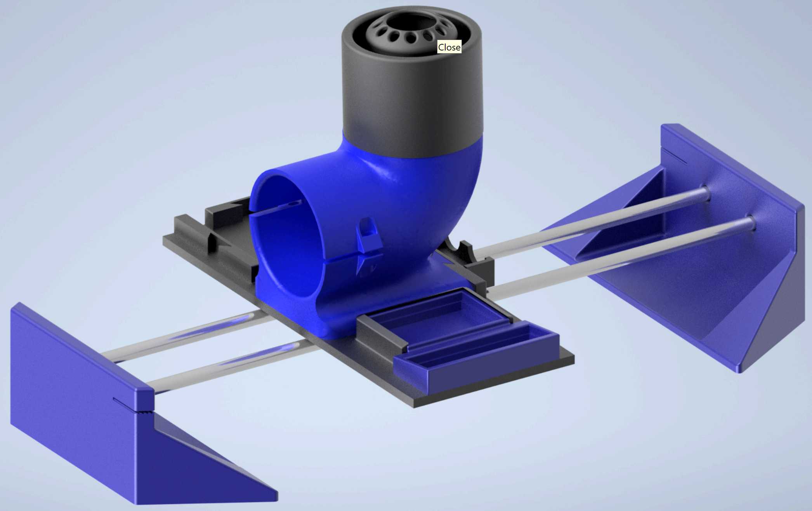

Hover-Pong
ESET 462 Control Systems Project
Used an Arduino-based control loop with ultrasonic and lidar ToF sensors to regulate a levitating object’s height.
Programmed a PID controller to stabilize ball height using input from a TFLuna I2C LiDAR sensor.
Controlled an EDF's (Electronic Ducted Fan) ESC (Electronic Speed Controller) with PWM signals to modulate airflow and maintain lift.
Implemented a sinusoidal path tracking function where setpoint height is dynamically computed based on cart position.
Measured cart position using an HC-SR04 ultrasonic sensor and computed the sine wave setpoint in real time.
Developed serial logging for real-time debugging of system variables including setpoint, actual height, and PWM output.
Designed, 3D printed, and assembled the mechanical structure in Fusion 360 for full system integration.
View the full project code on GitHub.

← Return to Main Page